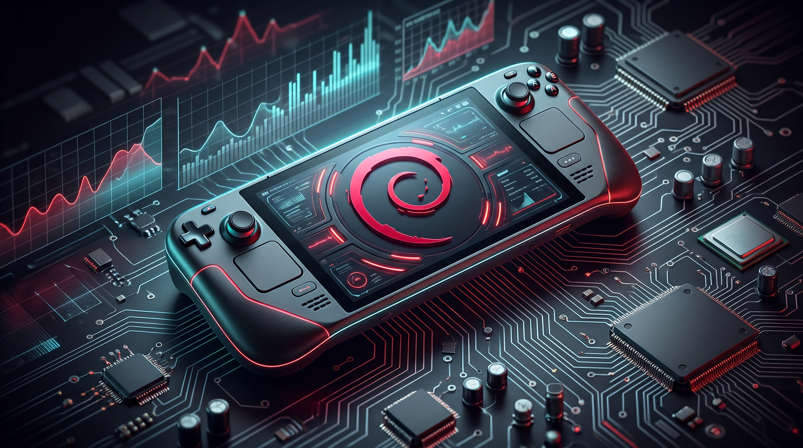

Debian înființează o echipă dedicată hardware-ului de gaming: Teste și optimizări pentru console portabile, compatibilitate de ultimă generație și o viitoare „Blend” OEM

Dezvoltatorii și menținătorii Debian au anunțat înființarea oficială a Debian Gaming Hardware Team, o inițiativă complet nouă, deschisă voluntarilor, creată pentru a îmbunătăți substanțial experiența de gaming pe această distribuție legendară prin testarea, documentarea și remedierea problemelor de compatibilitate de pe dispozitivele de jocuri.
Focus pe hardware modern: Console portabile (handhelds) și console de casă
Echipa își propune să testeze Debian pe o gamă largă de dispozitive de gaming, concentrându-se în special pe hardware-ul portabil și de emulare, inclusiv:
Dispozitive vizate: Steam Deck, ASUS ROG Ally, dispozitive de emulare și console de casă (precum Steam Machines).
Baza de date de compatibilitate: Proiectul va documenta comportamentul sistemului pe diverse configurații și va menține o bază de date cu bug-uri și compatibilități, cu scopul de a dezvolta și aplica patch-uri specifice pentru problemele hardware identificate.
Misiunea: Abordarea „elefantului din cameră” fără a afecta stabilitatea
Debian este recunoscut la nivel global pentru stabilitatea sa conservatoare, însă această filozofie a însemnat adesea că suportul pentru hardware-ul de ultimă generație (bleeding-edge) — crucial pentru jocuri — a fost dificil de asigurat din start:
Noul grup dorește să rezolve această discrepanță, oferind utilizatorilor o platformă Debian care să funcționeze excelent pe hardware modern, fără a compromite standardele de robustețe ale sistemului de operare.
Activitatea echipei se va desfășura în paralel cu structurile existente, fiind formată din voluntari, ceea ce înseamnă că nu va sustrage resurse de la alte echipe esențiale ale distribuției.
O viitoare „Pure Blend” pentru producători (OEM)
Pe termen mai lung, echipa are ambiții care depășesc simpla testare de către utilizatori:
Pure Blend dedicat: Se dorește crearea unei variante personalizate de Debian (Debian Pure Blend), optimizată special pentru gaming, care să poată fi preinstalată direct de către producătorii de hardware (OEM) pe console de jocuri și alte sisteme dedicate.
Beneficii pentru ecosistem: Îmbunătățirile aduse de această echipă vor avea un impact pozitiv indirect și asupra altor distribuții populare derivate din Debian (precum Linux Mint sau Ubuntu), ajutând la scurtarea timpilor de adoptare a noilor tehnologii hardware de gaming.
Cum te poți implica
Lansarea oficială a fost marcată de deschiderea unei pagini wiki dedicate, unde utilizatorii de rând sunt invitați să testeze Debian pe propriile dispozitive de gaming (handheld-uri, console de casă sau sisteme desktop) și să trimită rapoarte detaliate despre experiența lor: